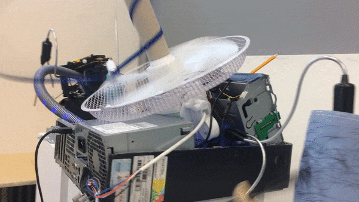
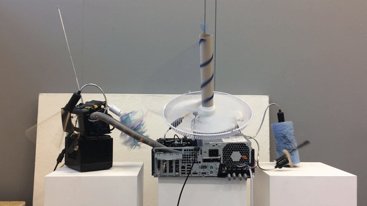
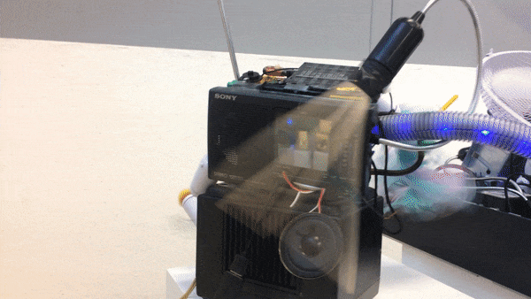
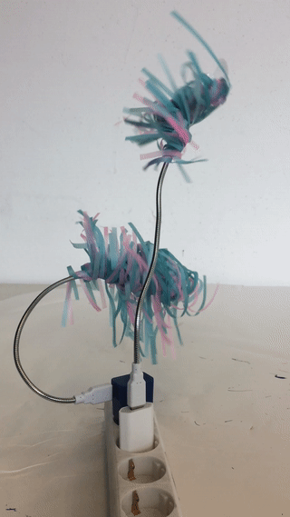
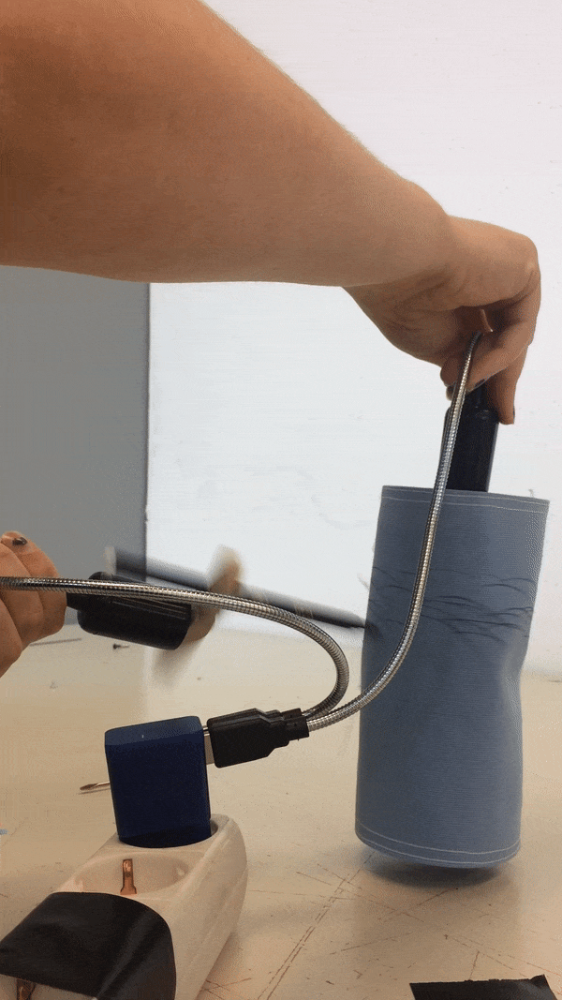
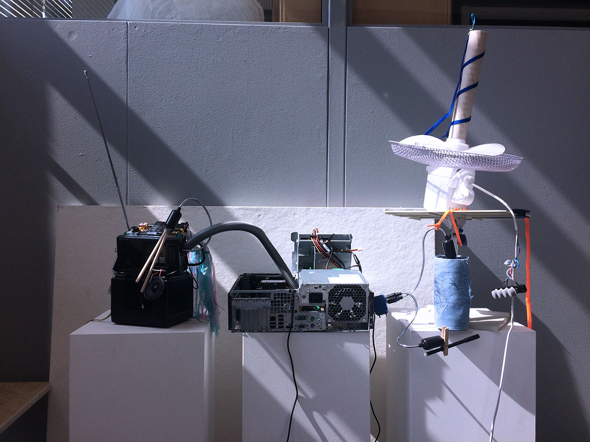
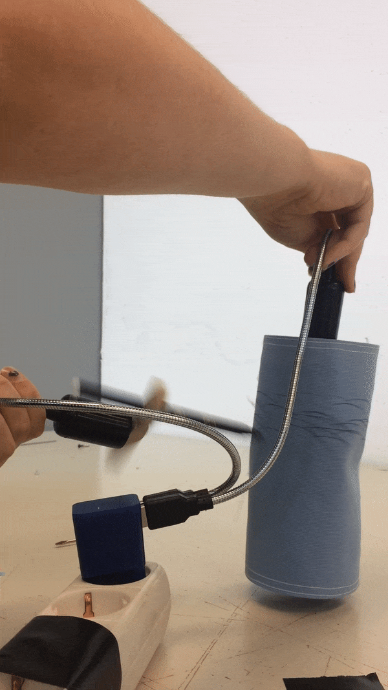
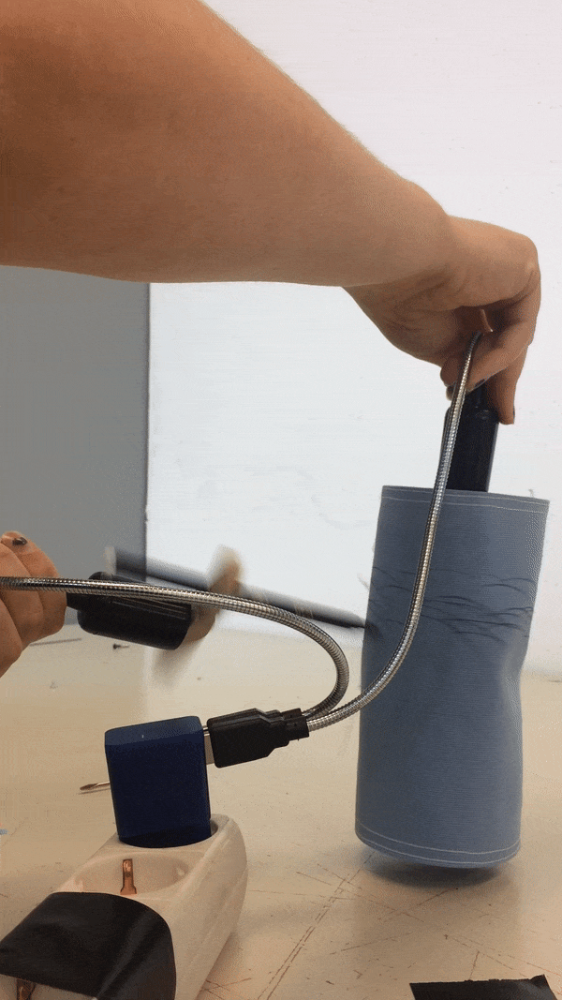

A modular design studio. Everything you need in your daily life as a great designer! Some nice music, lights, a calculator, a notepad machine taking notes for you and even a meditation module! A print designer tool to create amazing fabrics. Currently not available as a portable machine, but we're working on that.



description
Two machines living in broken machines like parasites. Material: broken radio, broken computer, cables, spiders webs, spiders (dead and alive, definitely somewhere) and a lot of mini fans. It's kind of like a planet, city or body with different sections and functions. It's alive!
about
Machines can be awkward or clumsy. Technology is not sterile, it is manmade and therefore inherently imperfect.
Technology and nature are in constant motion. Technology imitating nature. Technology corrupting and restraining nature. But after the death of a machine, nature crawls right back in. A miniature ecosystem can and will take its place.
lab
This is an ongoing experiment. I'm moving my studio to the laboratorium of a lunatic inventor. You are looking at the virtual version of that lab.
In the meantime, the robots are getting comfortable in deserted machines.
experiments


An installation, currently asleep
Interconnected diptych

Triptych
Order now, and receive a complementary cleaning tool! But wait! If you order within the next 5 seconds, you will even get a charger for it! But wait! It's a toothbrush with a sponge.
future
Since technology seems to become part of the human body (be it on top of the body or from within),
fashion is going to play a role. Fashion has always been about the crazy new stuff, so I can definitely see some potential there. I
love both fashion and technology. I strongly believe art thrive on chaos and disorder,
so I'm just gonna do a little mash-up.


 
